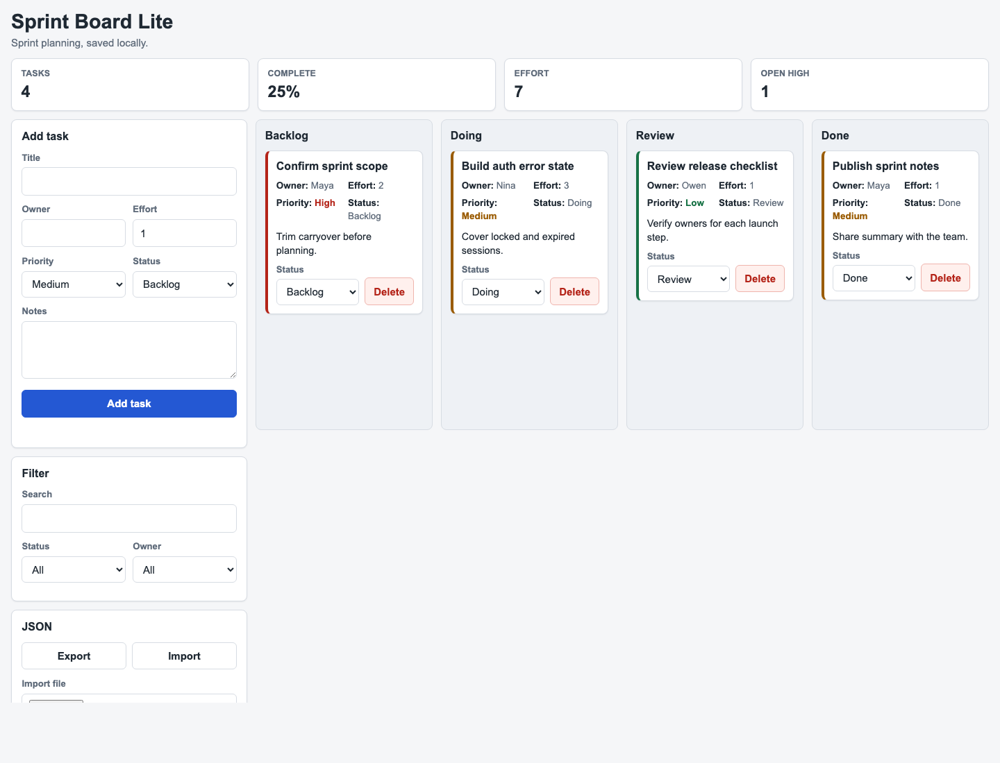
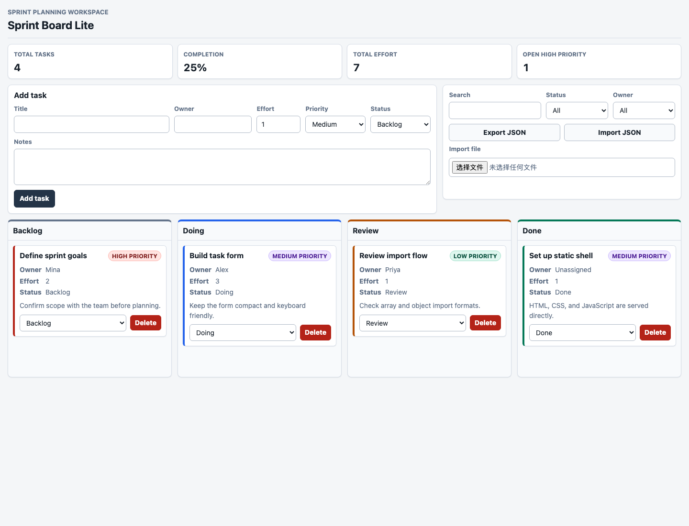
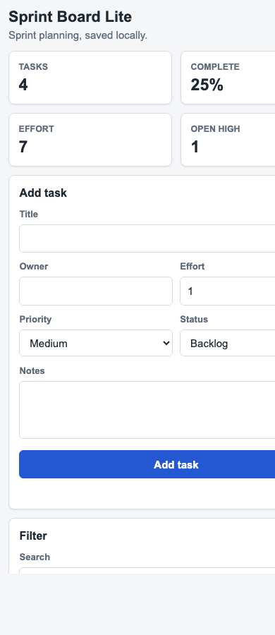
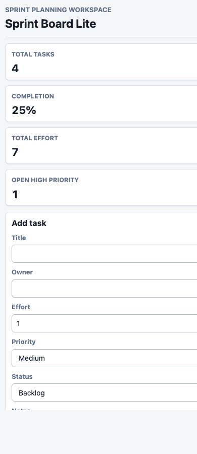

Direct: 桌面端
功能可用，布局较普通
左侧工具区纵向堆叠，JSON 区在首屏底部被截断；看板区域可用但页面右下留白明显。
四张图均由本机 Chrome headless 真实渲染生成，不是手工 mock。桌面端展示完整首屏； 移动端使用 390x900 视口，用于观察响应式和横向溢出。

左侧工具区纵向堆叠，JSON 区在首屏底部被截断；看板区域可用但页面右下留白明显。

表单、筛选、导入导出组成顶部工作区，看板独占下方区域；视觉层次和扫描效率更好。

KPI 仍保持两列，右侧内容被视口裁切；表单也偏宽，移动端首屏可用性不足。

KPI 已变为单列，但表单控件仍有右侧裁切迹象；响应式策略还没有真正闭环。